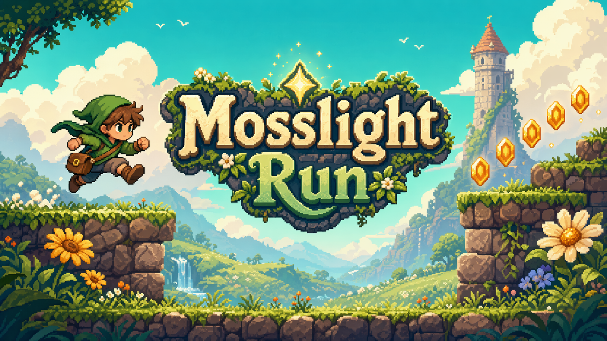

Original retro platformer
Mosslight Run
Help Pip the courier relight three hillside beacons by sprinting across mossy ruins, double-jumping over bramble pits, uncovering hidden glimmer caches, and outsmarting stubborn beetles. It carries the bright, side-scrolling energy of classic 8-bit platformers while keeping every character, item, and location original.

Controls
Move with Arrow keys or A/D, jump with Space, W, or Arrow Up, jump again once in midair for a double jump, pause with Esc or P, and restart with R.
Audio & art
Title illustration is original. In-game sprites are custom SVG assets made for this project, and the sound effects come from Kenney's CC0 audio packs. Secret glimmer caches are tucked into off-route ledges for explorers.